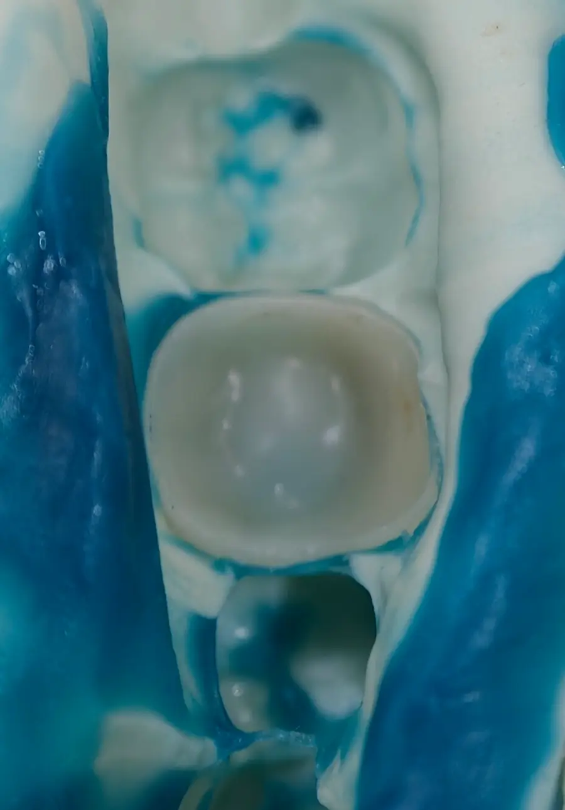

نسخه استخراجشده؛ ترجمه یا تأیید علمی انجام نشده است. وضعیت: captured
لابراتوار قالبت را برگردانده و میگوید: «واش کش آمده، از اول قالب بگیر.» یعنی چه؟ و دفعهی بعد چه کنی که تکرار نشود؟
یعنی مادهی قالبگیری قبل از اینکه کامل ست شود از دهان خارج شده است. مادهی ستنشده موقع بیرون آوردن تکان میخورد و دفرمه میشود و همان دفرمگی در قالب میماند. خطا در لحظهی خروج ساخته میشود، نه در لحظهی ثبت.
نتیجه: قالب شکل واقعی دندان را ثبت نکرده و هر چیزی که روی آن ساخته شود روی دندان نمینشیند. برای همین لابراتوار قالبگیری از اول را میخواهد.
قالبگیری دستی روش خیلی دقیقی است، به شرط اینکه اصولش رعایت شود؛ یکی از این اصول این است که به ماده فرصت بدهی کامل ست شود و زود درش نیاوری.
قالب پیکآپ (Pick-up Impression) یعنی پروتز یا رستوریشن را در دهان بنشانی و از آن قالب بگیری، طوری که رستوریشن در قالب بماند و همراهش بیرون بیاید. اینطور لابراتوار فقط شکل بافتها را نمیگیرد؛ رابطهی واقعی پروتز با دندانهای مجاور و بافت نرم را هم دارد.

گاهی کانتکت روکش روی کست درست است ولی در دهان باز است، و معمولاً مشکل از خود کست است: دای جابهجا شده، سطح پروگزیمال گچ ساییده شده یا قالب خطا داشته. روکش را بنشان و از آن پیکآپ بگیر؛ وقتی تکنسین قالب را میریزد، روکش دقیقاً همانجایی قرار میگیرد که در دهان بود. معلوم میشود کدام کانتکت چقدر باز است و چقدر سرامیک باید اضافه شود، و اصلاح دیگر روی همان کستی انجام نمیشود که خطا از آن آمده.